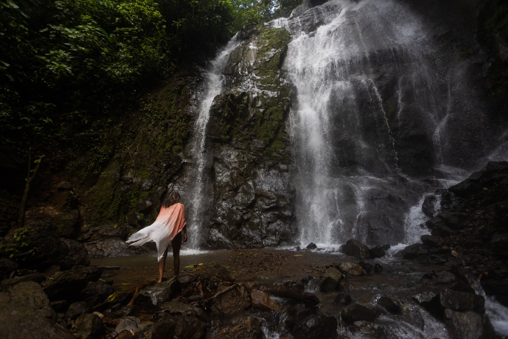
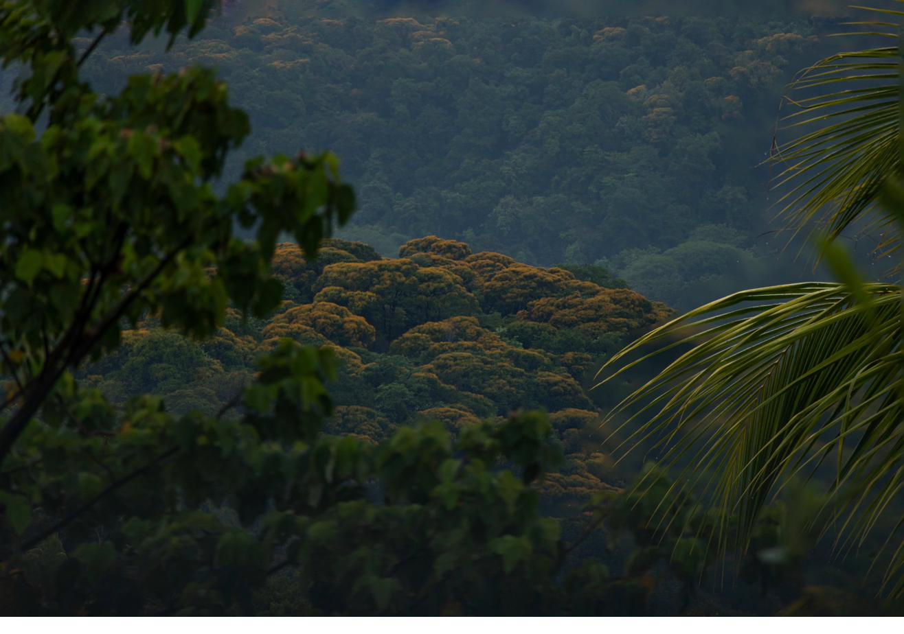
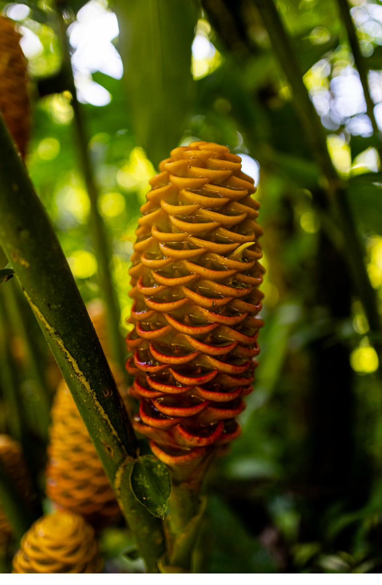
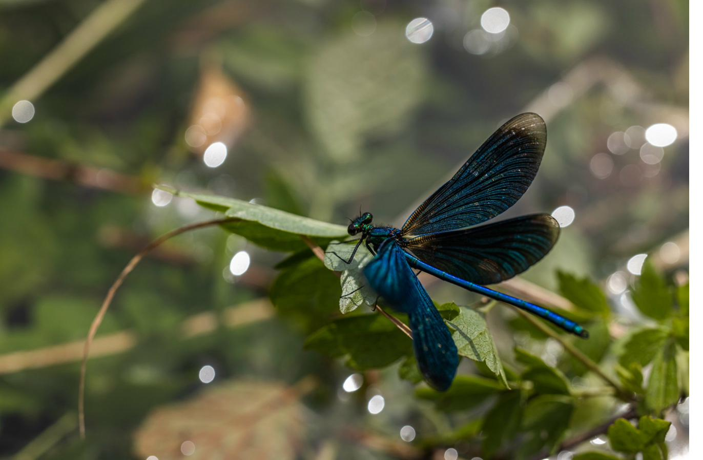
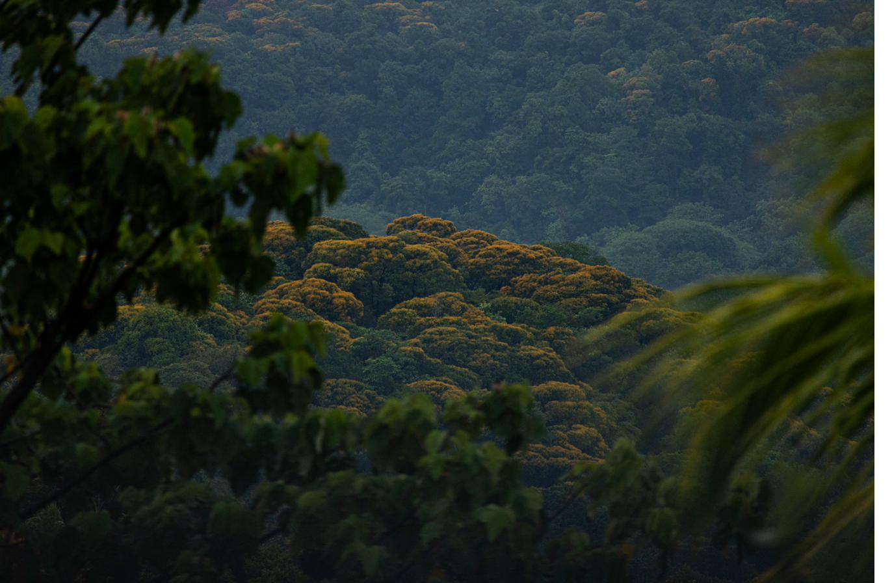
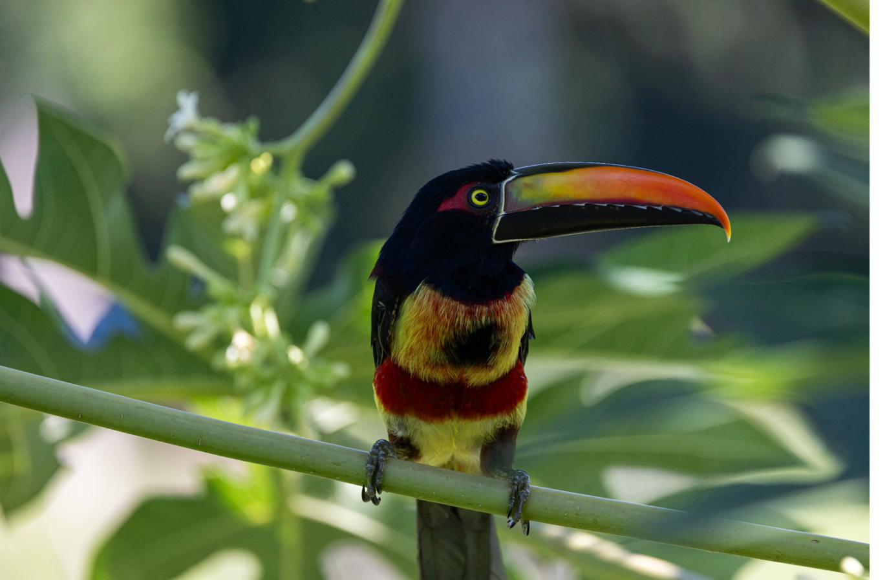
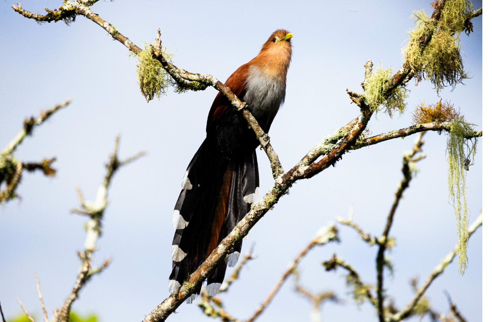

Watch — CASCADA · Piedras Blancas · Osa Peninsula
Ansehen — CASCADA · Piedras Blancas · Halbinsel Osa

Phase I · Piedras Blancas · Osa Peninsula Phase I · Piedras Blancas · Halbinsel Osa
74 acres of titled land in one of the world's most biodiverse regions. Five families. One waterfall. A complete, functioning community — by design. 74 Acres Eigentumsland in einer der artenreichsten Regionen der Welt. Fünf Familien. Ein Wasserfall. Eine vollständige Gemeinschaft.

Fully titled land on volcanic soil that has never been industrially farmed. Adjacent to Piedras Blancas National Park — one of the world's most significant biodiversity corridors. Three rivers, one permanent waterfall, two hilltop positions with confirmed Pacific Ocean views.Vollständig tituliertes Land auf Vulkanboden, der nie industriell bewirtschaftet wurde. Angrenzend an den Nationalpark Piedras Blancas — einen der bedeutendsten Biodiversitätskorridore der Welt. Drei Flüsse, ein permanenter Wasserfall, zwei Gipfelpositionen mit bestätigtem Pazifikblick.
| 30.2 ha | Fully titled — 74.6 acresVolles Eigentumsrecht — 74,6 Acres |
| 3 Rivers3 Flüsse | Mountain-source water on siteBergquellwasser vor Ort |
| 1 Waterfall1 Wasserfall | Natural plunge poolNatürliches Tauchbecken |
| 2 Summits2 Gipfel | Pacific Ocean panorama confirmedPazifikpanorama bestätigt |
| VolcanicVulkanisch | Never chemically treatedNie chemisch behandelt |
| EquatorialÄquatorial | No off-season — continuous growing year-roundKeine Nebensaison — ganzjährig Anbau |
| $246/mo | Shared operations per householdGemeinsame Betriebskosten pro Haushalt |

No terrain levelled. Every lodge has its own independent access — no resident passes through another's space. The building works around every existing tree. The landscape is not the obstacle — it is the design brief.Kein Gelände planiert. Jede Lodge hat ihren eigenen unabhängigen Zugang — kein Bewohner überquert den Raum eines anderen. Das Gebäude passt sich jedem bestehenden Baum an. Die Landschaft ist kein Hindernis — sie ist die Entwurfsgrundlage.
| Lodge | SizeGröße | CharacterCharakter |
|---|---|---|
| Caretaker's CabinHüter-Kabine | 60–80m² | Deepest valley — stone, clay, grass roofTiefstes Tal — Stein, Lehm, Grasdach |
| La Niebla I | 80m² · 1BR | Waterfall-edge — mist, natural poolAm Wasserfall — Nebel, natürliches Becken |
| La Niebla II | 80m² · 1BR | Mirror position — independent accessSpiegelposition — unabhängiger Zugang |
| El Cóndor Premium | 100m² · 2BR | Pacific views — above the canopyPazifikblick — über dem Blätterdach |
| Mirador Premium | 120m² · 2BR | Dual panorama — Pacific + TalamancaDoppelpanorama — Pazifik + Talamanca |
| SkillFähigkeit | PriorityPriorität |
|---|---|
| Agriculture, permaculture, soil managementLandwirtschaft, Permakultur, Bodenmanagement | CriticalKritisch |
| Animal husbandry — cattle, poultry, beesTierhaltung — Rinder, Geflügel, Bienen | CriticalKritisch |
| Building — bamboo, timber, clay, stoneBauen — Bambus, Holz, Lehm, Stein | CriticalKritisch |
| Water systems — spring, filtration, gravity feedWassersysteme — Quelle, Filtration, Schwerkraft | CriticalKritisch |
| Food processing — fermentation, dairy, cacaoLebensmittelverarbeitung — Fermentation, Molkerei, Kakao | HighHoch |
| Natural medicine & herbal knowledgeNaturmedizin & Kräuterwissen | HighHoch |
| Solar & energy systemsSolar- & Energiesysteme | HighHoch |
| Community governance & conflict resolutionGemeinschaftsführung & Konfliktlösung | HighHoch |


Cold, mineral-rich, mountain-source water — gravity-fed from source to tap. Untreated. Unchlorinated. Vegetables from volcanic soil that has never seen a pesticide. Eggs from hens in grass. Milk from cows that know the land.Kaltes, mineralreiches Bergquellwasser — schwerkraftgespeist vom Ursprung bis zum Wasserhahn. Unbehandelt. Unchloriert. Gemüse aus Vulkanboden, der nie ein Pestizid gesehen hat. Eier von Hühnern im Gras. Milch von Kühen, die das Land kennen.
| LivestockNutztiere | Qty | PurposeZweck |
|---|---|---|
| Dairy CowsMilchkühe | 3–4 | Milk, cheese, butterMilch, Käse, Butter |
| Laying HensLegehennen | 50–60 | 2–3 eggs/day per household2–3 Eier/Tag pro Haushalt |
| PigsSchweine | 4–6 | Protein + lardProtein + Schmalz |
| TilapiaTilapia | ongoing | Fresh fish year-roundFrischer Fisch ganzjährig |
| HoneybeesHonigbienen | 6 hives | Honey + pollinationHonig + Bestäubung |
The 830 documented plants are the intentional layer — laid over a foundation of primary tropical forest with wild cacao, soursop, breadfruit, and dozens of medicinal species that nature built long before us.Die 830 dokumentierten Pflanzen sind die bewusste Schicht — aufgelegt auf ein Fundament aus primärem Tropenwald mit wildem Kakao, Soursop, Brotfrucht und Dutzenden Heilpflanzenarten, die die Natur lange vor uns aufgebaut hat.
| PlantPflanze | # |
|---|---|
| CoffeeKaffee | 150 |
| Manga | 103 |
| Rambutan / Mamón ChinoRambutan / Mamón Chino | 60 |
| AvocadoAvocado | 60 |
| MangoMango | 54 |
| Sweet MandarinSüße Mandarine | 52 |
| Asian MandarinAsiatische Mandarine | 52 |
| Bitter CedarBitterzeder | 50 |
| Yellow CortezaGelbe Corteza | 50 |
| Sweet OrangeSüßorange | 40 |
| Savannah OakSavannen-Eiche | 40 |
| SoursopStachelannone | 25 |
| Sweet LemonSüße Zitrone | 20 |
| Creole LemonKreolische Zitrone | 20 |
| Sota Caballo | 20 |
| CashewCashew | 15 |
| ChestnutKastanie | 12 |
| Espavel | 10 |
| Purple Star ApplePurpur-Sternapfel | 10 |
| Cacao | 6 |
| GuavaGuave | 3 |
| Peach PalmPfirsichpalme | 3 |
| Water AppleWasserrose | 2 |
| Rose AppleRosenapfel | 2 |
| Total | 830 |

Each trustee family's position is protected through a Costa Rica land trust (Fideicomiso), a private governance charter, and a lodge occupation agreement. The land is never held in any individual's personal name — what each family holds is a beneficial trustee position that is more resilient and more private than conventional title.Die Position jeder Treuhänderfamilie ist durch einen Costa-Rica-Landtrust (Fideicomiso), eine private Governance-Charta und eine Lodge-Nutzungsvereinbarung geschützt. Das Land steht niemals im persönlichen Namen einer Einzelperson — was jede Familie hält, ist eine vorteilhafte Treuhänderposition, die widerstandsfähiger und privater ist als konventionelles Eigentum.
Ongoing shared ops: approx. $246/month per household. All figures indicative and non-binding.Laufende gemeinsame Betriebskosten: ca. 246 $/Monat pro Haushalt. Alle Angaben sind Richtwerte und unverbindlich.

CASCADA is Phase I of a deliberate, multi-year development program across neighbouring properties in Costa Rica — all sharing identical ideology, identical legal framework, and the same uncompromising standard.CASCADA ist Phase I eines bewussten, mehrjährigen Entwicklungsprogramms über benachbarte Grundstücke in Costa Rica — alle teilen dieselbe Ideologie, dasselbe Rechtsrahmen und denselben kompromisslosen Standard.
| PhasePhase | LocationLage | ScaleGröße | TimelineZeitplan |
|---|---|---|---|
| I — CASCADA | Piedras Blancas | 30.2 ha | Active · Jul 2026Aktiv · Jul 2026 |
| II | Adjacent, OsaAngrenzend, Osa | ~20 ha | 2026–2027 |
| III | Mountain Range ABergkette A | ~40 ha | 2027–2028 |
| IV | Mountain Range BBergkette B | ~40 ha | 2028–2029 |
| V | Mountain Range CBergkette C | ~40 ha | 2029–2030 |
This questionnaire helps us understand who you are and what you bring. There are no right answers — only honest alignment. There is no sales funnel. There is a conversation.Dieser Fragebogen hilft uns zu verstehen, wer Sie sind und was Sie mitbringen. Es gibt keine richtigen Antworten — nur ehrliche Übereinstimmung. Es gibt keinen Verkaufstrichter. Es gibt ein Gespräch.